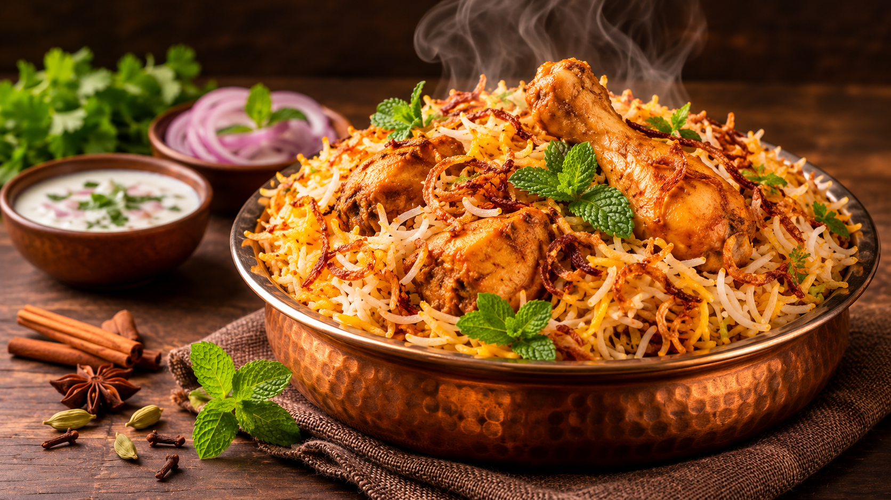
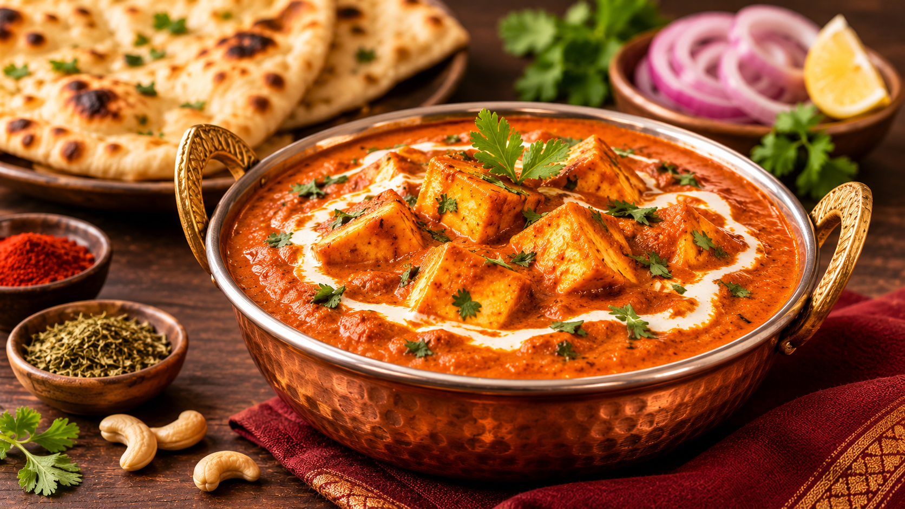
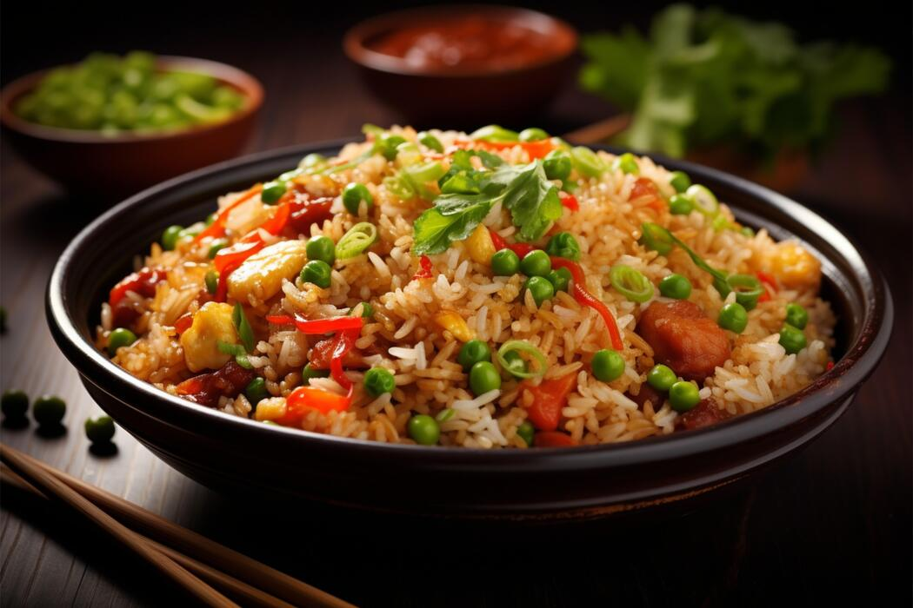

Chicken Biryani
Fragrant basmati rice cooked with tender chicken, fresh herbs and aromatic spices.
View Recipe →Explore delicious homemade recipes made with love, fresh ingredients and authentic flavours.
Explore Recipes →Find your next favourite dish and bring something delicious to your table.

Fragrant basmati rice cooked with tender chicken, fresh herbs and aromatic spices.
View Recipe →
Soft paneer cubes in a rich, creamy tomato gravy with delicious Indian spices.
View Recipe →
A quick and colourful rice dish prepared with fresh vegetables and simple seasonings.
View Recipe →A delicious Indian rice dish made with tender chicken, fragrant basmati rice and aromatic spices.
Tip: Avoid stirring the biryani too much while cooking so the rice grains remain long and separate.
Soft paneer cubes cooked in a creamy tomato gravy with butter and aromatic Indian spices.
Tip: Avoid overcooking the paneer to keep it soft.
A simple and tasty fried rice recipe made with colourful vegetables and flavourful seasonings.
Tip: Use cooled, cooked rice for better texture and to avoid mushy fried rice.
DishCraft is a little space for food lovers who enjoy exploring homemade recipes. From traditional Indian dishes to quick everyday meals, we bring simple ingredients and delicious flavours together.
Our goal is to make cooking enjoyable, creative and accessible to everyone.